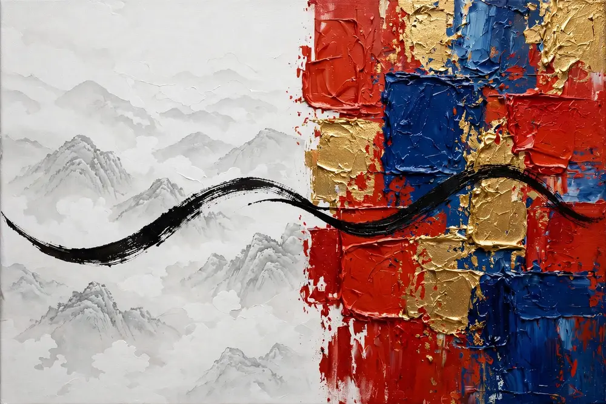
東西交會，一筆貫通
書法線條的書寫性，結合西方半自動技法的抽象繪畫——評論人陸承石形容：他的畫面色彩，夾雜著台灣在地文化的基調，透過心智的記憶，書寫成記憶中的風景。

台灣當代藝術家 · 藝術博士
CHIN WU · WU RI-QIN
書寫的當下，一筆入魂。
以東方書法的線條氣韻，結合西方油畫的厚重肌理與強烈色彩——每一筆，都是一次性的直覺；每一幅畫，都是生命經驗的沉澱與轉化。
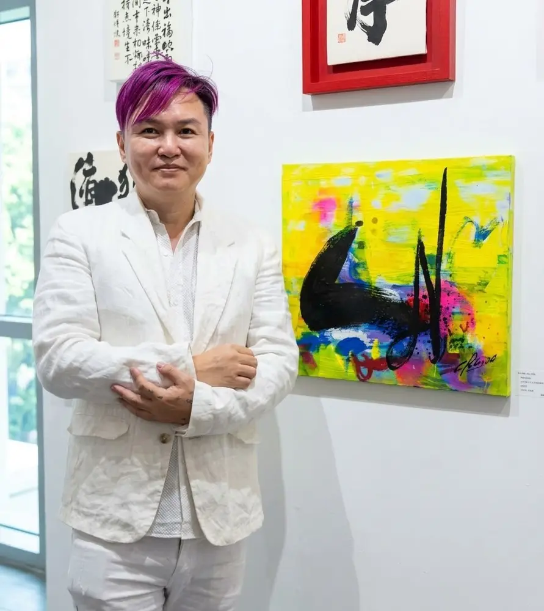
ABOUT
吳日勤 1971 年出生，10 歲開始寫書法。從國畫組的科班訓練，到舊金山、倫敦的碩博士研究，再到紐約與北京的駐地創作——他用三十年的時間，把一支毛筆，寫進了當代藝術的世界。
「藝術是超越時間、空間與語言的交流方式。」線條是靈魂的脈動，永遠烙印在畫布中；境由我造，一筆定江山。
「暢筆采韻映合。」
—— 林進忠（國立臺灣藝術大學副校長），評《書寫的當下樣貌》
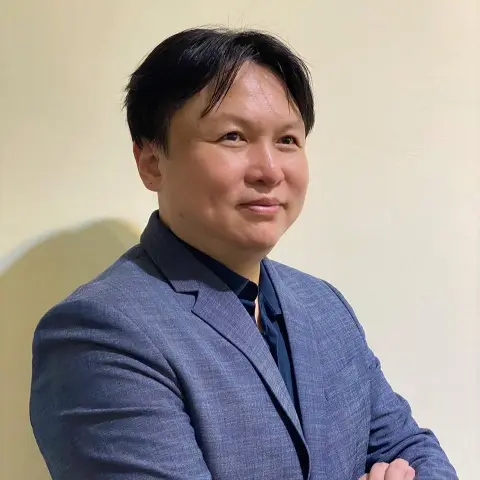
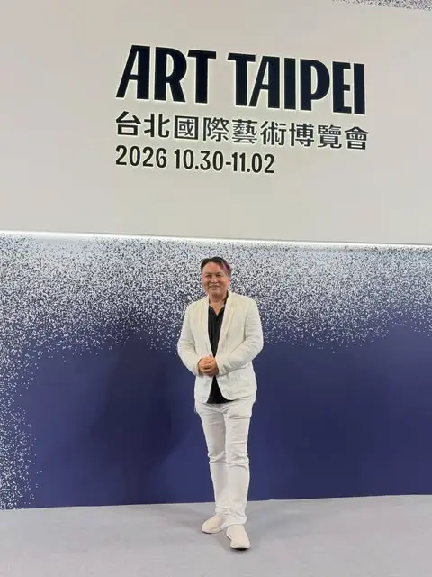
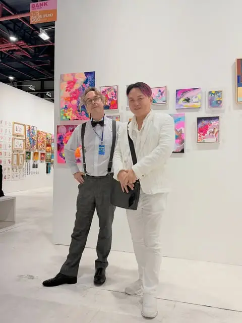
LANGUAGE
中國水墨書法的線條律動與氣韻，遇上西方油畫與壓克力顏料的厚重肌理——剛柔並濟，東西交會，寫出屬於台灣的當代抽象。

書法線條的書寫性，結合西方半自動技法的抽象繪畫——評論人陸承石形容：他的畫面色彩，夾雜著台灣在地文化的基調，透過心智的記憶，書寫成記憶中的風景。

直覺先於理性，身體先於思考。一筆完成，不回頭、不修改。
「線條是靈魂的脈動，永遠烙印在畫布中。」
—— 吳日勤談創作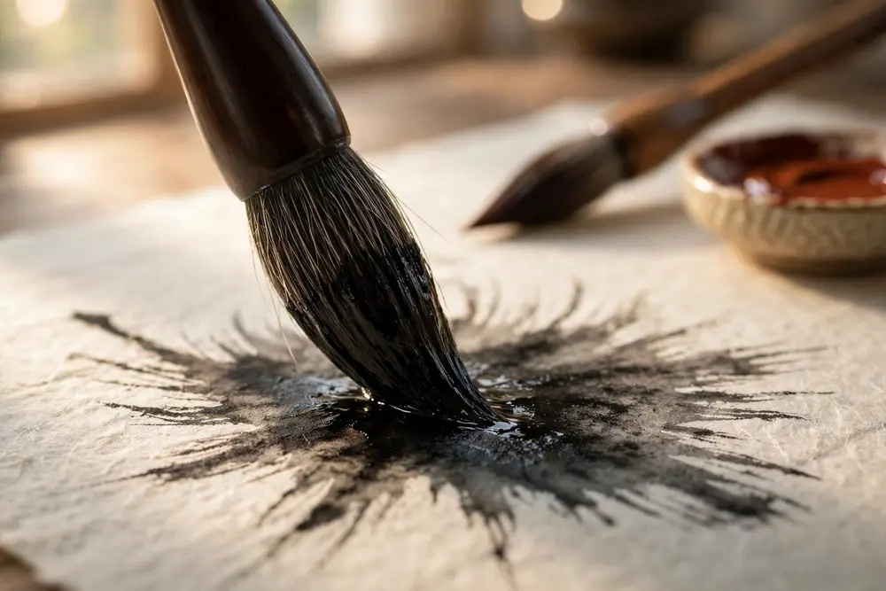
10 歲習書，1995 年獲師生美展書法第一名。

紐約、倫敦、舊金山、北京，14 年海外創作與研究。
SPOTLIGHT
點畫面上的紅點，看《當下》裡的四個關鍵——這是他最具代表性的書寫語言，一筆、厚塗、原色、飛濺。
When the Moment Comes · 吳日勤代表作之一
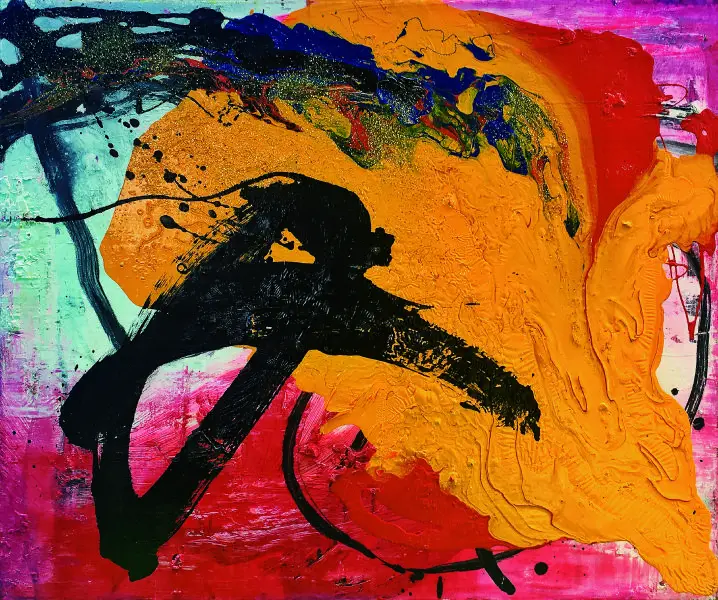
一筆定江山。書法入畫的骨架，全畫的氣韻由此生發——線條是靈魂的脈動，永遠烙印在畫布中。
JOURNEY
從台灣出發，走過舊金山、紐約、北京、倫敦，再回到台灣——每一段旅居，都在畫布上留下了一道筆觸。
美術科國畫組畢業，同年獲師生美展書法第一名。
舊金山藝術大學藝術碩士；於 Bush 畫廊舉辦《城市之光—舊金山》個展。
在 798 藝術區定居一年，專業創作與理論研究；韓畫廊個展《微觀》。
英國東倫敦大學藝術博士畢業；博士班期間於 AVA 畫廊發表 Show Case。
獲選德國 Artoll 國際藝術機構台灣代表當代藝術家，駐村個展《冷析》；同年返台定居，成立台北工作室。
耘非凡美術館個展，展出 64 件油畫與彩瓷；高雄市立美術館出版同名畫冊。
創作源於父親的心電圖——線條，是個人靈魂心跳的體驗過程。
日畫廊《交界》台韓當代藝術對話聯展；台江文化中心《江中城—心心埕市》聯展。
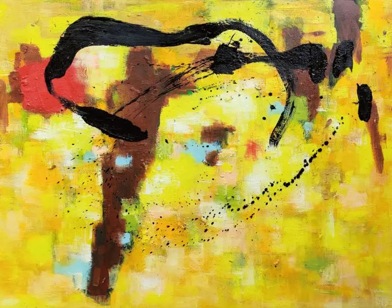
「每一幅作品，都是一段生命經驗的沉澱與轉化。」
—— 吳日勤，Instagram 自述
WORKS
點開看大圖。作品圖片由晴山藝術中心、非池中藝術網公開圖錄提供，收藏洽詢請洽代理畫廊。
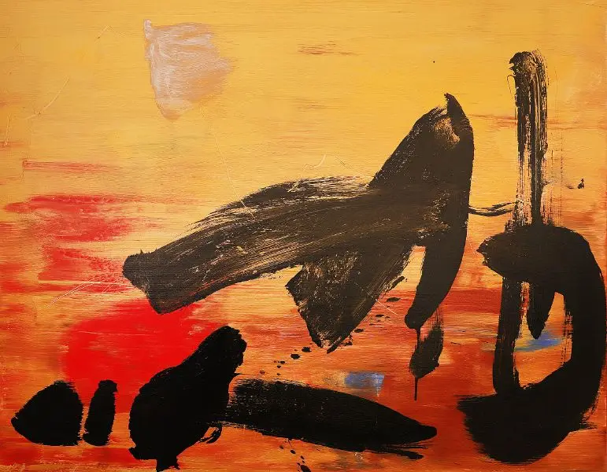
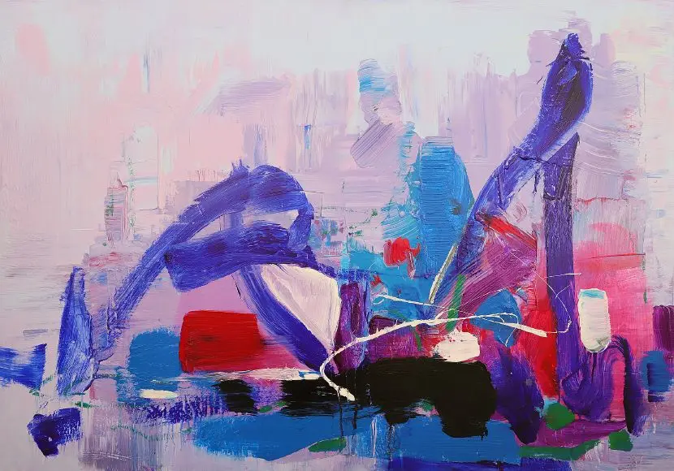
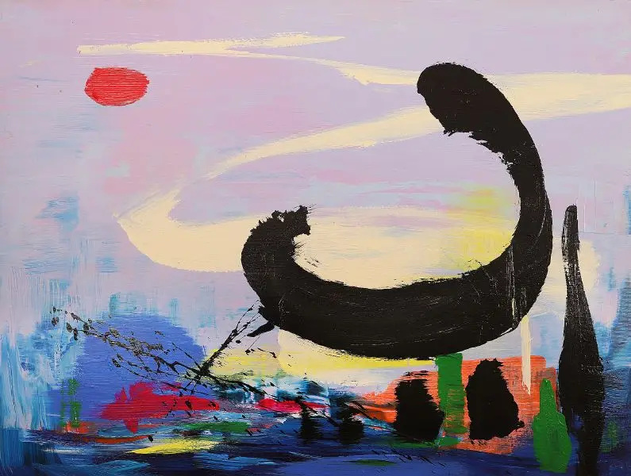
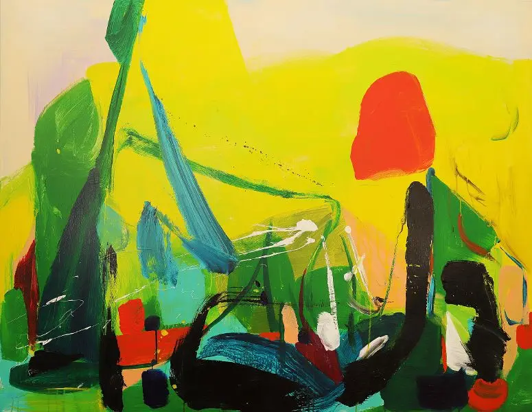
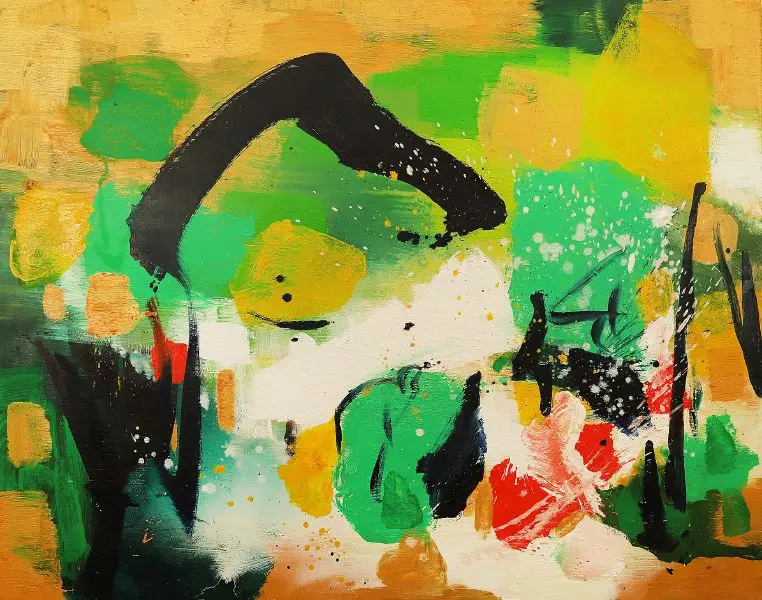
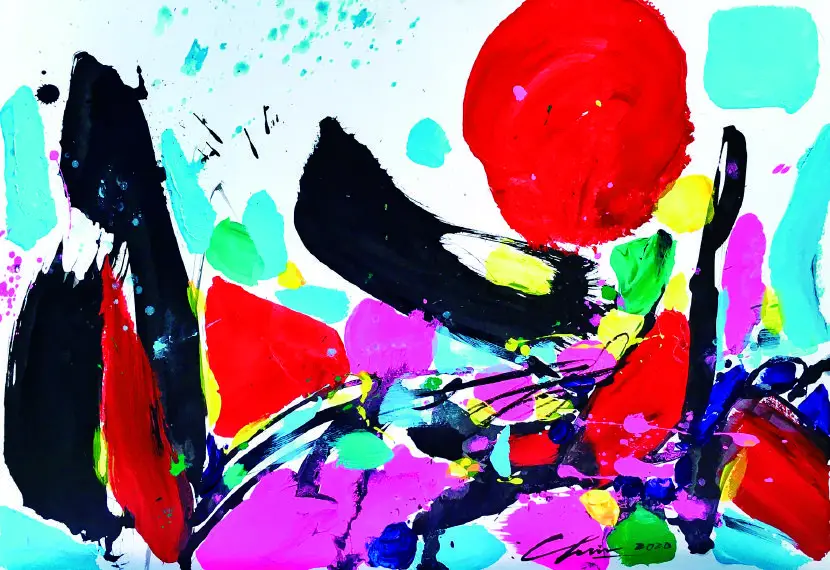
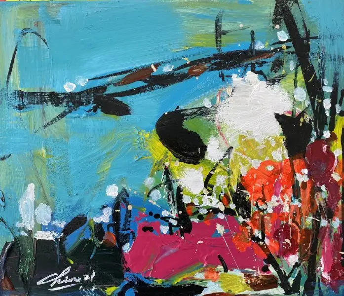
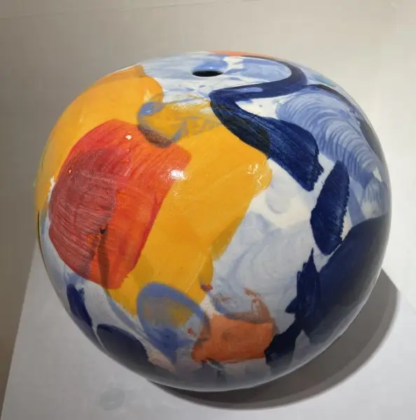
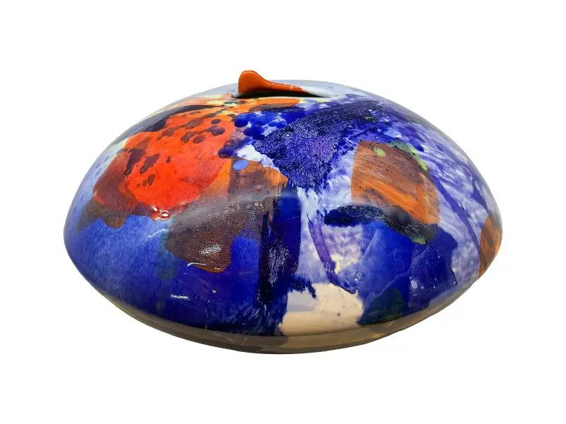
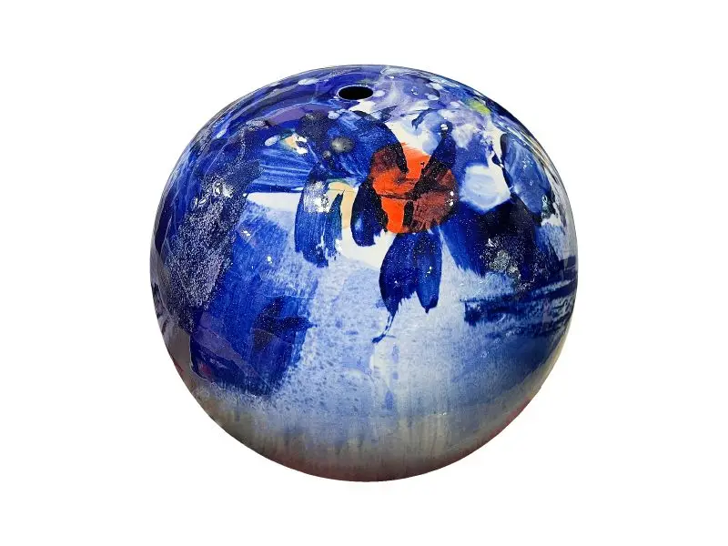
CERAMICS
近年來，吳日勤與台灣知名陶瓷機構合作，把平面上的書寫線條與色彩張力，轉譯到立體瓷器上。《詩性空間》陶藝展於臺華窯北中南四地巡迴；2022 年「動靜之間」創作展於高雄夢時代臺華窯展出油畫與彩瓷。
書法線條在高溫中與結晶釉色對話——線條是個人靈魂心跳的體驗過程，燒成之後，永恆凝結。
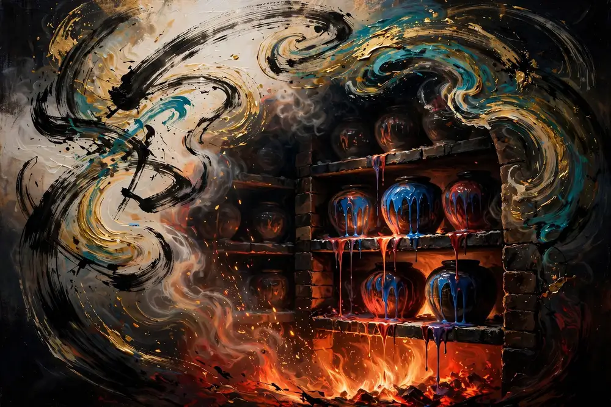
COLLECTIONS & AWARDS
作品獲美術館、機場、企業與大學典藏，並曾出現在好萊塢電影的場景之中。
另有英國、德國、加拿大、上海、北京等地私人收藏。
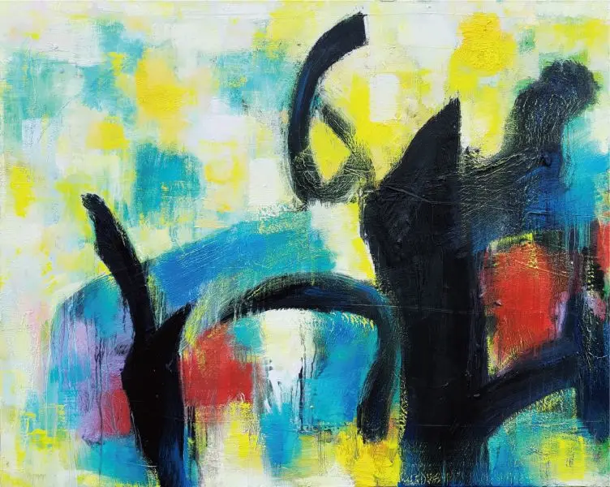
MEDIA & EVENTS
日畫廊攜手首爾 Michelle Gallery，於日畫廊臺北空間展出。報導以「台灣書寫」形容他的創作：強調當下直覺的「一次性筆觸」。
台江文化中心年度首檔展覽，與吳瓊文、梁璥韓共同展出，以繪畫呈現台江地區的自然景觀與人文脈絡。
台灣 621 展間由吳日勤博士領軍策劃，與林丁禾共同推薦七位台灣新銳藝術家聯合展出。

CONTACT
最新作品與展覽動態，請追蹤他的 Instagram 與 Threads；完整履歷與作品圖錄，請見非池中藝術網藝術家專頁。作品收藏與展覽洽詢，請洽代理畫廊晴山藝術中心。
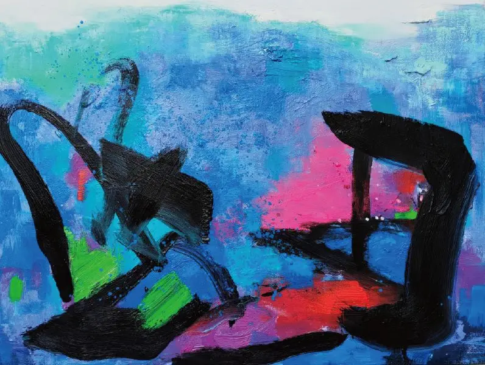